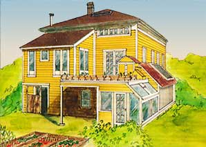
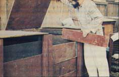
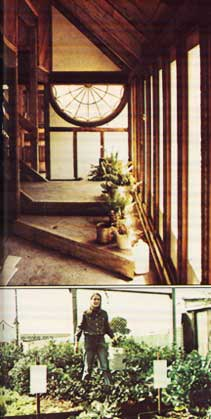
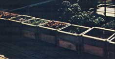
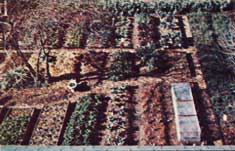
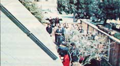

The Integral Urban House
A Victorian mansion in Berkeley California is converted into an urban homestead.
By Julie Reynolds
November/December 1976
For all the current talk about getting "back to the land" and becoming self-sufficient, darn few folks have taken the lead in showing urban residents-apartment dwellers and city homeowners-how they too can enjoy a more self-reliant way of life. One organization that is doing encouraging work in this area is the Farallones Institute of Berkeley, California. Here's a report on just one of the Institute's project: the conversion of a Victorian mansion into an urban homestead!
By Julie Reynolds
Away out here in Berkeley, California-in an aging semi-industrial neighborhood-an enthusiastic group of "doers" has come together to restore (and display to the public) a 100-year-old Victorian house. What's so unusual about that? Nothing . . . except that the stately dwelling-now known as the Integral Urban House-has become one of the country's most innovative and successful "urban homesteads".
Half a dozen IUH residents grow their own fruits and vegetables, raise chickens, rabbits, and fish, recycle 90% of their wastes, solar heat their hot water, and conduct a variety of alternative technology experiments . . . all on a 1/8-acre city lot!
"The Integral Urban House exists," explains house resident Charles O'Loughlin, "to serve as a model for a more ecologically sound urban habitat, and to provide urban dwellers with physical and conceptual tools for creating a more self-reliant lifestyle." In other words, the IUH staffers want to show by example how city folk can "live better for less" . . . while doing a good deed for the planet at the same time.
A MINI-ECOSYSTEM
The Integral Urban House is a project of the Farallones Institute, a non-profit organization founded in 1969 by a group of northern Californians interested in low-impact, non-resource-intensive living . . . among them Sim van der Ryn (now the official California State Architect) and Bill and Helga Olkowski (authors of Rodale Press's City People's Book of Raising Food).
The Institute's members bought their two-story Victorian building in 1974 and remodeled it inside and out during the following year. Now the structure is no longer just a house but the nucleus of a mini-ecosystem in which rabbits, chickens, fish, honeybees, plants, microbes, and people interact in a flourishing example of interrelated self-reliance.
As it happens, the IUH is not only a small ecosystem but an educational exhibit for the dozens of interested spectators who visit the house every week. (Folks who stop by during "open house"-1:00 to 5:00 p.m. on Saturdays-can enjoy an intensive 45-minute tour conducted by Charles O'Loughlin, Tanya Drlik, or Tom Javits. Or, if they prefer, visitors can simply browse among the house's books and inspect various displays while their children play with the bunnies out back.)
"Most environmental 'education' consists of an afternoon at the zoo or a wildflower walk," remarks house manager Tom Javits. "Here, environmental education is geared toward getting people to apply sound ecological concepts to their own lives."
URBAN GARDENING
An example of "applied ecology" at its best is the Integral Urban House garden, which-even in the dead of winter-is lush with foliage and brimming with vegetables. Because the size of the IUH lot precludes the planting of long rows, crops are sown in raised beds that surround the house. (Plant varieties are rotated from bed to bed to keep specific soil nutrients from becoming exhausted in any one section of the garden, and seedlings are grown in the greenhouse so that the beds are always occupied by mature-or nearly mature-plants.)
The variety of fruits arid vegetables raised on the 125' X 60' IUH lot is nothing short of astounding. Small avocado, fig, and quince trees stand above raised beds closely planted in potatoes, broccoli, lettuce, tomatoes, corn, peas, beets, carrots, celery, spinach, chard, and squash. Salad greens, scallions, and herbs are grown on the porch (adjacent to the kitchen), while nearby are perennial patches of strawberries, rhubarb, and asparagus. In addition, dwarf fruit trees- espaliered to the north wall of the house-will soon provide lemons, plums, and three kinds of apples.
IUH staffers use no chemical fertilizers to bring forth this bounty of luscious edibles. Rather, a one-inch-deep layer of compost-made from kitchen garbage, rabbit manure, grass clippings, sawdust, and other wastes-is maintained on the garden's beds to [1] act as a mulch which keeps weeds down and [2] make the soil light, airy, and rich in nutrients. (No tilling is ever needed.) And, thanks to laborsaving techniques developed especially for urban gardeners by Bill and Helga Olkowski, each IUH resident spends only 15 minutes per day in the vegetable patch . . . a regimen, certainly, that even the most work-shy city dweller could find agreeable!
Because of the rich diversity of plantings in the garden, insects rarely pose a problem. (Small plantings of many types of crops tends to prevent mass infestation by any one kind of pest.) And when insects do pose a problem, biological controls-such as natural insect predators and specialized diseases that affect only the pest in question-soon "settle the hash" of the unwanted intruders.
To further make the point that anyone- even apartment dwellers with no access to cultivatable land-can grow their own food, Integral House residents have created a rooftop garden of containers filled with pure compost. (The compost is not only rich in plant nutrients, but is lighter than soil and thus lessens the load that would otherwise be placed on the building's rafters.)
LOW-COST MEAT
The Integral House's food-raising efforts extend not only to the growing of fruits and vegetables but to the production of animal protein as well. The latter, in this case, means chickens and rabbits.
All together, about 15 chickens-layers and fryers-inhabit the Institute's urban homestead. Four hens live in a "composting house" on the roof, where-in addition to laying eggs within ten feet of the breakfast table-the birds produce rich manure for the compost heaps. The remaining cluckers are kept at ground level, on the shady north side of the old Victorian building.
Some 10 to 20 rabbits, depending on whether or not a litter has been born recently, are also housed on the structure's shady side. Commercial pellets, garden-grown alfalfa, and discarded produce obtained from a nearby market make up the bunnies' diet. (EDITORS NOTE: You can learn more about the feeding, breeding, and care of rabbits by reading E. P. Bell's and Bob Bode's articles in MOTHER NO. 32.)
Rabbits are an ideal meat animal for the urban homesteader because they're quiet, very little trouble to raise, produce high quality protein, and are easy to kill. This last point may not seem too important to some of you well-seasoned homesteaders. But if you consider how far-removed the average city dweller is from the life-and-death process of maintaining a food supply, you'll understand that the "social acceptance of the slaughter" can sometimes become the most important factor in the decision when an urbanite chooses between raising his or her own food and buying it from a supermarket.
All told, the scant handful of Integral Urban House rabbits and chickens produce a whopping 350 pounds of meat annually, at a cost of only 25 cents to 35 cents per pound. In addition, the hens lay about 1,560 (130 dozen) eggs a year, worth at least 50 cents per dozen . . . or a total of $65. To say nothing about the valuable manure (and-in the case of the rabbits-pelts) produced by this small livestock. That's a pretty good bargain by anyone's standards.
AQUACULTURE
Sterling Bunnell-the Farallones institute's biological expert-manages an IUH aquaculture program, designed to determine if the production of fish and crustaceans can be made feasible for city dwellers. Bunnell has concentrated on raising native California water life-such as Sacramento blackfish, rainbow trout, and Pacifasticus (a genus of crayfish that can grow to lobster size)-in an experimental fish pond in the house's small yard.
Along with the daphnia and algae that grow naturally in the pond, Bunnell's "livestock" feeds on worms and bees raised by Integral Urban House staffers. The worms are grown in sawdust-covered trays mounted below IUH chicken cages to catch the birds' droppings. (The little wigglers thus serve as both fish food and "workers" that speed the production of compost from the chicken manure.)
The bees-on the other hand-fall into the pond only occasionally, and by accident, as they return to either of two hives located above the body of water. Says Sterling: "Happily, the hives contain so many bees that the loss-now and then-of a few unlucky ones doesn't hurt anything."
At present, Bunnell is installing a biological filtration system designed to remove growth-inhibiting wastes (produced by the fish) from the pond's water. The system is stunningly simple: It's nothing more than a bed of oyster shells-coated with bacteria that feed upon (and filter out) impurities in the water-through which the body of water's effluent is passed. If it works, the filtering system should significantly increase the yield (by weight) of fish from the small pond.
A TASTE OF HONEY
Of course, no homestead-urban or otherwise-would be 100% complete without at least one beehive. And the Integral Urban House (as already mentioned) has two of them, located on a platform high above the fish pond.
"The bees are our foreign envoys," house manager Tom Davits grins. "They go out and pollinate the neighbors' flowers, then bring the nectar back here and make it into honey."
Bees are another ideal variety of city "livestock". They're quiet, they take care of themselves, and-most important-you don't feed them . . . they feed you! Integral House residents recently harvested 35 pounds of delicious eucalyptus honey from their hives, and-according to Tom-the IUH bee operation yields several times that amount of the sweetener over the course of a year.
So that others may learn about beekeeping, the Integral House offers membership in a bee club. (Members can use the house's honey extractor and other equipment, as well as attend classes in beekeeping.) In addition, the IUH maintains an observation beehive on the first floor, where visitors can observe the bees as they do their fascinating dances, see the queen lay her eggs, or watch new workers hatch. (The show is better than TV, by far!)
WASTE MANAGEMENT
A great deal of attention is given to the intelligent recycling of wastes at Integral Urban House. As a result, nothing (aside from those occasional bits of plastic packaging that everything from cheese to nails now seems to come in) is "thrown away". Milk cartons become planters for seedlings, bags are re-used at the market, scraps of paper are burned in the wood stove . . . even garbage, human wastes, and dirty water are recycled right on the premises.
Kitchen garbage, of course, becomes compost . . . but not until it's been picked through by the chickens. The refuse is spread on the floor of the hens' pen, which allows the birds to get an extra ration of eats while creating a valuable nitrogen-rich ingredient (chicken manure) for the IUH composting operation.
Whenever a new batch of compost is started-which is to say, every two or three weeks-the waste material is [1] raked from the floor of the chicken pen, [2] combined with manure and sawdust from the rabbit cages and plant debris from the garden, [3] layered into one of three 3'-square wooden compost bins, and [4] emptied into an adjoining bin every three days thereafter. (One of the three containers is always full of "working" compost, one always contains bucketfuls of the finished natural fertilizer, and the third is kept empty so that-as desired-either of the other two can be turned into it.)
Human wastes are also composted, but not in bins. Instead, the wastes decompose inside a waterless toilet known as the Clivus Multrum, which is approved by health officials in Sweden (where the device is widely used) but not-except in Maine, where water has been getting scarce lately-in the U.S. Local authorities have allowed the Integral Urban House to use a Clivus Multrum on an experimental basis.
The toilet works, briefly, as follows: Excrement falls into a large, slatted fiberglass rank (which is vented to the outside of the house) containing a series of baffles. As the wastes accumulate, they slowly slide down the container's sloping bottom from one compartment to another and undergo aerobic decomposition. After a two-year digestion period (to allow disease-causing micro-organisms a chance to die), the wastes can be removed from the Clivus in the form of compost.
Despite the fact that present American sewage systems aren't 100% safe (a sewage worker strike could lead to disaster), health officials will not approve the use of Clivus compost on a garden for fear that if certain pathogens did survive the composting process, they might be passed to humans via the vegetables. "We have a solution to the pathogen problem," says Charles O'Loughlin (who, incidentally, has obtained a grant to study composting toilets). "And that's to use the finished compost only on ornamental plants, thereby avoiding contamination of food."
Regardless of whether or not one uses the high-grade fertilizer that comes out of it, the Clivus Multrum is a worthwhile addition to the homestead from another point of view: It consumes no water. "Thanks to our Clivus Multrum," asserts Tom Javits, "I figure we use as much water in this entire house-for bathing, washing dishes, and so on-as the average family does just in flushing their toilet."
And what little water the IUH residents do use gets recycled. "Gray water" from the sinks and shower goes into a holding tank and is then channeled-along with urine-to the garden. "The mixture of gray water and urine," Tom says, "is a well-balanced one-chemically speaking-for our garden. Gray water is high in phosphorus-from detergents-and urine, of course, is rich in nitrogen." Phosphates, Tom is quick to point out, are usually harmful to aquatic ecosystems (rivers, lakes, and streams). "But in a terrestrial system such as a garden they can be very beneficial."
SOLAR HEATED WATER
Nearly all the IUH's hot water needs are met by a solar heater that can warm 120 gallons of water in an attic storage tank to surprisingly high temperatures . . . often past 170° F.
The 86-square-foot solar collector that is the heart of the system is the "Ritz of homebuilt collectors" and is expected to last the lifetime of the house. Doug Daniels, who helped I design the solar-powered heater, says the complete system-including storage tank and pipes (items that would've been required for a conventional electrically operated heater anyway)-cost around $900 to build, not counting labor. Taking into account the utility bills and maintenance costs associated with more traditional water heaters, Doug figures that the solar-powered setup should pay for itself in 10 years.
A small electric water heater acts as an emergency backup system. (Although electric water heaters are less efficient than gas-fired units, the pilot light on a gas heater must burn continuously. And, since the IUH backup is called upon so infrequently, that would be rather wasteful.) So far, the electric standby has been used only three times . . . and even then it was relatively efficient since it was being fed water that'd been pre-warmed to 95° F by the solar heating system.
SPACE HEATING
Although Berkeley winters are relatively mild, one study has shown that the average home in that town uses as much energy for space heating during the winter as a residence in Minneapolis! The reason: In chilly Minnesota, people know the value of proper insulation . . . while in "sunny California", insulation is-for the most part-used only as a last resort. Except, that is, for the Integral Urban House.
Tom Javits feels that if a Berkeley home were properly insulated, it'd need little-or no-space heating. And he's probably right, because last winter (before all its "extra" insulation was installed) the IUH had no space heater at all (a wood-burning stove is being added now), yet-except for a few frigid days-no one felt the worse for it.
Besides exceptionally good insulation, the Integral House has several other features which contribute to its year-round coziness. For instance: when the old Victorian mansion was rebuilt by its present owners, it was fitted with a large number of south-facing windows and only a few windows on the north side. This produces some degree of passive solar heating during the day. (The upstairs windows are equipped with insulated shutters that are closed to help retain warmth at night.)
Within the building's bathroom is a smaller version of Steve Baer's Drum Wall: a bottle wall, in which one-gallon glass jugs-filled with ink-blackened water and supported in rows just inside the windows-serve as heat sinks that absorb the energy in the sun's rays. At night, insulated shutters (outside the windows) can be closed to keep the bottles' stored heat inside where it radiates into the room.
As luck would have it, my own downstairs bedroom in the house (yes, I live here too!) is solar heated-quite effectively, I might add-by the adjoining greenhouse. Warmth radiates into my room during the day whenever I open a window between the two sections of the house.
Much of the IUH cooking is done on a beautiful old combination gas and wood stove (equipped with an O-shaped-or doughnut-stovepipe that radiates into the room a bit more of the heat which would otherwise go up the chimney). The house also uses a large solar oven-built by a student-for baking casseroles or bread on sunny days.
Most IUH staffers feel that wind and methane systems work best on a neighborhood or block level, rather than on an individual dwelling basis. For this reason, you won't find any windplant towers or methane digesters on the IUH grounds.
SELF-RELIANCE OR SELF-SUFFICIENCY
Occasionally, a visitor is surprised, disappointed, even annoyed, to learn that the Integral Urban House isn't completely "selfsufficient". The fact is, though, that the folks here at the IUH don't want their house to become an isolated haven in the midst of a city. (Besides, if a system-such as methane generation-is just plain inefficient on a household level, the IUH staffers would rather not use it . . . even if the alternative is to remain dependent-for the time being-on city gas or electricity.) Self-reliance- which has fewer overtones of isolationism and non-cooperation than "self-sufficiency"-is a better term for what the Institute is trying to promote.
The Integral Urban House isn't the only urban homestead around these days, of course . . . there's also, among others, the Eco-house in London and Project Ouroboros in St. Paul, Minnesota. (See MOTHER NO. 36, pages 93-96, for a write-up on the Ouroboros projects.-THE EDITORS.)
Thanks to such fine examples of self-reliant urban living, more and more solar-heated homes and community gardens are springing up across the country, and increasing numbers of city dwellers are learning to soften the sidewalk-hard reality of their lives with the feel of good soil, the taste of vine-ripened vegetables and truly fresh eggs, and the warmth of sun-heated water.
Yes, you can live a more self-reliant, ecologically sound life-even in the city-if you want to. That's what the Integral Urban House is all about.
EDITOR'S NOTE: The Integral Urban House accepts apprentices and offers both undergraduate and graduate degree programs through Antioch College/West. For more information on these programs-or on the Farallones Institute's other projects (such as public classes on solar energy, food production, environmental design, beekeeping, etc.)-write to Helga Olkowski, c/o the Farallones Institute, 1576 Fifth St., Berkeley, Calif. 94770. And be sure to include a small (or large!) donation to cover mailing expenses.
|
 House resident Charles O'Loughlin inspects one of three wooden compost bins. The containers feature slatted sides, to allow easy removal of compost (which is ready to use after about three weeks of biodegradation). |
 ABOVE TOP: The IUH greenhouse serves not only as a shelter and nursery for seedlings, but as a solar heater for the adjoining bedroom!, BOTTOM: Some 10 chickens and 10 to 20 rabbits (not shown) inhabit the cages on the house's shady north side. Kitchen garbage is given to the hens before going to the compost bin. |
 The containerized rooftop garden. Proof positive that anyone?even apartment dwellers?can grow their own food! |
|
 ABOVE TOP: The Integral House?which was designed to be ecologically and aesthetically pleasing?featuring many fine examples of skilled carpentry work . . . such as here, in the dwelling's entrance and downstairs meeting area. BOTTOM: Molly Jones and other IUH residents work an average of only 15 minutes per day in the garden, thanks to laborsaving techniques developed especially for urban gardeners by Bill and Helga Olkowski. |
 ABOVE: The IUH garden, as seen from the roof. Crops are sown in raised beds that recovered with an inch of compost. |
 Members of a Saturday afternoon tour group stop to admire the IUH solar collector. |
|
 |
|
|